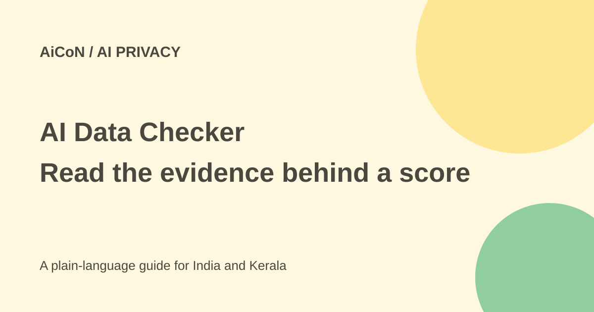

Gen AI Data Checker: privacy reports and email-scan limits
Gen's AI Data Checker can help you explore account connections and privacy policies. It is a beta starting point, not proof of every account you use or every piece of data an app holds.

What is AI Data Checker?
Gen announced the beta on 25 September 2026 as part of its Agent Trust Hub. Gen is the company behind brands including Norton. The announcement says a person can enter an email or username to explore connected AI and other accounts and see how services may collect, retain or use data.
The live site also has a public library of app privacy reports. These reports summarise policies and terms. A policy summary is not a complete audit of the service's actual internal behaviour or a download of all the personal data it holds about you.
What does the account scan actually check?
The site's method page says email and username discovery checks public profile pages and account-signup endpoints using open-source datasets. It says checks that would email the address are not run. An apparent match is evidence to inspect, not proof that you own the account or still use the service.
The method page says "couldn't check" means a site blocked the check, not that no account exists. Likewise, a missing result cannot prove you have never used an app. Use results to review your own records and account settings rather than treating them as a complete inventory.
Email, age and retention
The current homepage asks for an email address. Continuing confirms that you are at least 18, authorises the search and acknowledges its Privacy Notice. Do not enter another person's address or username without their permission.
The method page says submitted emails, connected Gmail addresses and waitlist signups are stored separately with source and time. Scan results expire after seven days, but that is not a seven-day deletion promise for the email records. Usernames are hashed. Read the current notice and method page before submitting an identifier.
How to use the reports
- Open the official Agent Trust Hub and read its method and Privacy Notice.
- Start with a public app report if you only want to understand a policy.
- If you choose discovery, use only your own permitted identifier.
- Review matches and uncertain results against your actual accounts.
- Expand the report's explanation and read its source quotes.
- Open the app's current policy and settings to confirm important claims.
- Change privacy settings or delete data through the actual provider's documented process.
What a grade means
The Hub says it uses an AI reader to answer 15 fixed questions from policies and terms, with checked source quotations and a rules-based score. Its own page warns that AI can make mistakes. Scores also depend on what a company states publicly, not a live security test performed by the Hub.
Use the supporting quotes and missing-information notes. A low-risk label is not a guarantee against a breach; a high-risk label is not proof that the app has actually misused your particular data. Settings, plan type and product terms can differ.
Optional Gmail discovery needs separate thought
The method page describes a Gmail connection that requests gmail.modify, a broader permission than read-only access. It says the current discovery only examines sender, subject, date and authentication headers from two years of catalogue-app emails, not bodies or attachments.
The site says discovery tokens and metadata remain in page-session memory and are not sent to its servers, but the connected Gmail address is saved. It also says broader permission is requested for possible future opt-out or deletion features. Those are provider statements, not a reason to connect an inbox without reviewing the consent screen.
Is it free?
The public pages checked here did not show a payment requirement for viewing reports. That does not establish a permanent free plan for every Hub feature or future beta service. This research did not submit an email or connect Gmail, so it does not claim to have completed a personal scan.
What changed since the original AiCoN post?
This guide adds the published scan method, 18+ consent, the difference between scan-result expiry and email retention, and the wider Gmail permission. It replaces the idea of a complete account inventory with evidence that needs checking.
Frequently asked questions
Does no match prove no account?
No. Coverage and blocked checks limit discovery.
Does a score prove actual security?
No. It largely reflects policy statements.
Did this guide scan my email?
No. No identifier was submitted.
Sources: Official beta announcement · Detailed investor announcement · Current Hub · Scan and scoring method · Privacy Notice. Checked 7 October 2026.